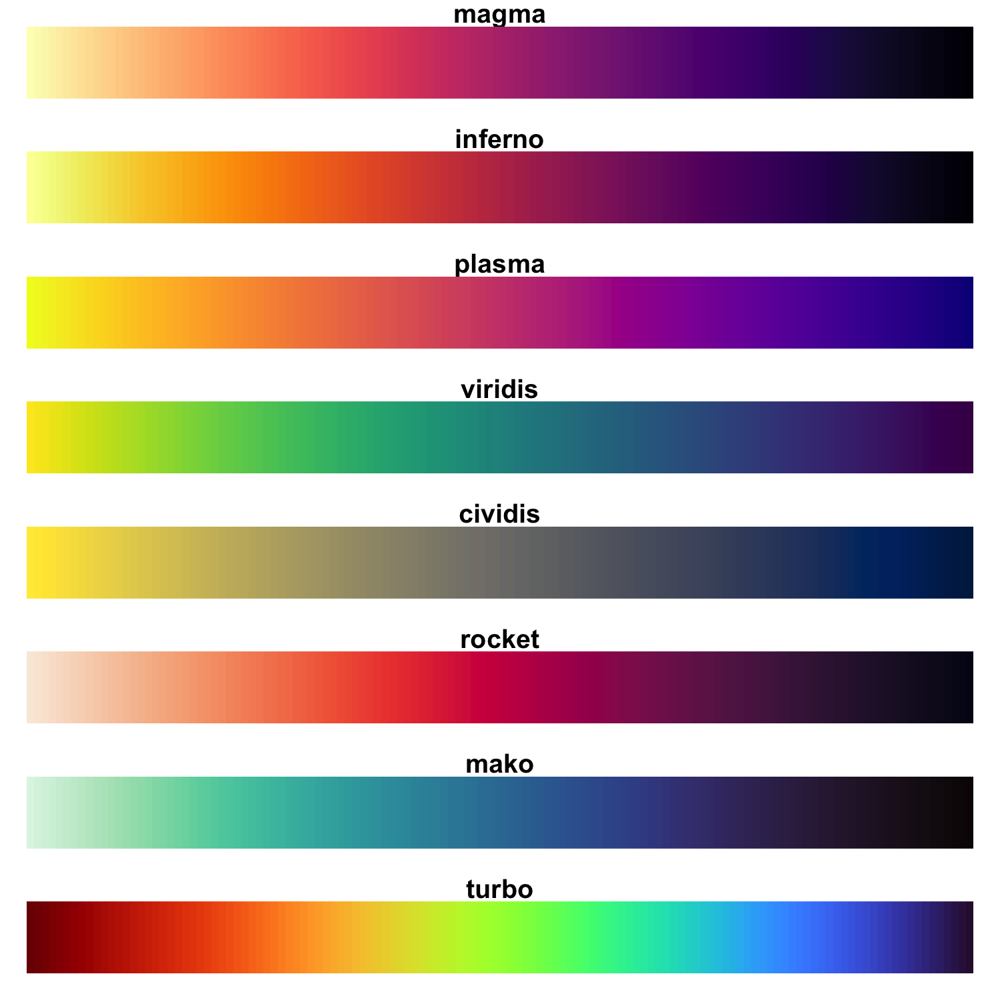

library(haven) # for data import
library(tidyverse)
# library(ggplot2) # not necessary if tidyverse is loaded5 Visualization with {ggplot2}
In addition to key figures/tables, distributions can and should also be visualized. {ggplot2} offers a huge variety of options for this.
{ggplot2} is part of the {tidyverse}, which means we can either load only {ggplot2} or the entire {tidyverse} collection:
First, let’s look at how to create a scatterplot:

Data for our graph is from the pend dataset, which contains information on working hours, as well as the gender and age of the respondents:
library(haven)
pend <- read_dta("./orig/PENDDAT_cf_W13.dta")pend %>% select(azges1,zpsex,palter) %>% head()# A tibble: 6 × 3
azges1 zpsex palter
<dbl+lbl> <dbl+lbl> <dbl+lbl>
1 -9 [Item not surveyed in wave] 2 [Female] 36
2 -9 [Item not surveyed in wave] 1 [Male] 39
3 -3 [Not applicable (filter)] 2 [Female] 38
4 -9 [Item not surveyed in wave] 1 [Male] 66
5 -9 [Item not surveyed in wave] 2 [Female] 61
6 -3 [Not applicable (filter)] 2 [Female] 62 To keep the graph manageable, we only use observations from wave 13:
pend_small <- pend %>% filter(welle==13)…and we’ll overwrite all missing values with NA. We’ll see later in Chapter 6 how to do this more efficiently.
pend_small$palter[pend_small$palter>100] <- NA
pend_small$casmin[pend_small$casmin<0] <- NA
pend_small$PAS0100[pend_small$PAS0100<0] <- NA
pend_small$azges1[pend_small$azges1<0] <- NA…alternatively, we use ifelse() and across() see here:
# pend_small$palter[pend_small$palter>100] <- NA
# pend_small <-
# pend_small %>%
# mutate(across(c("casmin", "PAS0100", "azges1"), ~ ifelse(.x < 0, NA, .x)))
pend_small <- pend %>%
filter(welle==13, palter < 100,
casmin >0 , PAS0100 > 0 , azges1 > 0)5.1 ggplot2 and the Grammar of Graphics
ggplot2 is the implementation of the concept of “layered grammar of graphics” in R. The idea of this visualization system is to break down data visualization into parameters: the underlying dataset, the variables to be displayed, the choice of display shapes, the coordinate system, scales, and statistical transformations. A standard command in ggplot2 looks something like this:
ggplot(data = dataset, aes(x = var1, y = var2, color = var3)) +
geom_point() +
labs(title= "Title", subtitle = "Subtitle") +
theme_minimal()So we first call up a plot with ggplot(). Further arguments then define additional aspects:
- With
data =, we specify thedata.framewe want to visualize. - The aesthetics
aes()specify which variables are to be displayed: herevar1on the x-axis,var2on the y-axis, andvar3for coloring. - The layers
geom_..specify the type of display, e.g.,geom_point()for point plots andgeom_bar()for bar charts. - With
labs, we can add labels, such as a title or axis labels. - The themes
theme_...set the design of the graphic, e.g., black and white axes and background colors withtheme_bw().
Now we will work through the individual layers of the graphic:
5.1.1 data =
In data =, we specify the data.frame that contains the information to be visualized. We start our ggplot with:
ggplot(data = pend_small)5.1.2 aes
We want to visualize these values in a scatterplot, with age on the x-axis and weekly working hours on the y-axis:
ggplot(data = pend_small, aes(x = palter, y = azges1))5.1.3 geom
If we only provide these details, we will get an empty coordinate system—why? Because we haven’t yet specified what form of display we want. For this, we must specify a geom_, such as geom_col() for bar charts, which we attach to the ggplot command with +:
ggplot(data = pend_small, aes(x = palter, y = azges1)) + geom_point()With color =, we can also change the color of the points:
ggplot(data = pend_small, aes(x = palter, y = azges1)) + geom_point(color = "orange")Here is an overview of all color names that are recognized, though there are many more colors—see Appendix.
5.1.4 aes() Part II
This already looks pretty good, but the points are not yet separated by gender. To do this, we need to include the gender information (zpsex) in aes(). In addition to the axes, aes() also specifies the variables for the appearance of the geom_s—this can include not only color but also shape, size, or transparency. Here’s an overview.
Gender should determine the color of the points, which we can specify in aes with color:
# results in an error due to labels:
ggplot(data = pend_small, aes(x = palter, y = azges1, color = zpsex )) +
geom_point()Error in UseMethod("rescale"): nicht anwendbare Methode für 'rescale' auf Objekt der Klasse "c('haven_labelled', 'vctrs_vctr', 'double')" angewendetA numeric variable for color = results in a color gradient, while a factor/character variable results in a discrete color scale:
ggplot(data = pend_small, aes(x = palter, y = azges1, color = as.numeric(zpsex))) +
geom_point()
ggplot(data = pend_small, aes(x = palter, y = azges1, color = as.factor(zpsex))) +
geom_point()
ggplot(data = pend_small, aes(x = palter, y = azges1, color = as.character(zpsex))) +
geom_point()We can also specify custom colors with scale_color_manual1, and a list of possible colors can be found here.
ggplot(data = pend_small, aes(x = palter, y = azges1, color = as.factor(zpsex))) +
geom_point() +
scale_color_manual(values = c("lightskyblue4","navy"))5.1.5 Labels
With the breaks and labels options, we can also edit the legend labels. To do this, we first specify the levels of the gender variable in breaks and then the corresponding labels in the same order:
ggplot(data = pend_small, aes(x = palter, y = azges1, color = as.factor(zpsex))) +
geom_point() +
scale_color_manual(values = c("lightskyblue4","navy"),
breaks = c(1,2), labels = c("Men", "Women") )Finally, we adjust the labels with labs, where we have the following options:
title: Title for the graphicsubtitle: Subtitle for the titlecaption: Annotation below the graphicx: x-axis labely: y-axis labelfill: Legend label whenfillis specified inaes()color: Legend label whencoloris specified inaes()linetype: Legend label whenlinetypeis specified inaes()
5.2 Combination of all options
ggplot(data = pend_small, aes(x = palter, y = azges1,
shape = as.factor(zpsex),
color = as.factor(zpsex))) +
geom_point(size = 4) +
scale_color_manual(values = c("lightskyblue4","orange"),
breaks = c(1,2), labels = c("Men", "Women")
) +
scale_shape_manual(values = c(18,20),
breaks = c(1,2), labels = c("Men", "Women")
) +
labs(color = "Gender",
shape = "Gender",
y = "Hours/Week",
x = "Age",
title = "Working hours and age",
subtitle = "By Gender",
caption = "Soruce: PASS CF 0619"
) 5.2.1 Exercise
5.3 Visualizing distributions
With the following syntax we can create a boxplot using ggplot2. Since we are only considering one variable, we only need to specify y = or x = depending on whether the box should be oriented vertically or horizontally.
ggplot(data = pend_small, aes(y = azges1)) + geom_boxplot()
ggplot(data = pend_small, aes(x = azges1)) + geom_boxplot()We can also create separate boxplots for men and women by specifying a variable for the other axis:
ggplot(data = pend_small, aes(y = azges1, x = factor(zpsex))) + geom_boxplot()5.3.1 Histogram
We can also describe distributions using a histogram using the geom_histogram() function. If we want to change the color, fill = is the correct option instead of color =:
ggplot(data = pend_small, aes(x = azges1)) +
geom_histogram()
ggplot(data = pend_small, aes(x = azges1)) +
geom_histogram(fill = "sienna1") To split the histogram by gender, we can again specify fill as an aesthetic. With position = position_dodge(), we can place the bars side by side:
ggplot(data = pend_small, aes(x = azges1, fill = factor(zpsex))) +
geom_histogram()
ggplot(data = pend_small, aes(x = azges1, fill = factor(zpsex))) +
geom_histogram(position = position_dodge()) The scale_...manual commands still work here, but as scale_fill_manual instead of scale_color_manual:
ggplot(data = pend_small, aes(x = azges1, fill = factor(zpsex))) +
geom_histogram(position = position_dodge()) +
scale_fill_manual(values = c("sienna1","dodgerblue4"),
breaks = 1:2, labels = c("Männer","Frauen")) +
labs(fill = "Geschlecht")5.3.2 Exercise
5.4 Categorical variables
Next, we’ll look at a way to visualize the contingency table from Chapter 2:
pend_small$PD0400[pend_small$PD0400<0] <- NA # exclude missings
pend_small %>%
count(zpsex, PD0400) %>%
filter(!is.na(PD0400))# A tibble: 8 × 3
zpsex PD0400 n
<dbl+lbl> <dbl+lbl> <int>
1 1 [Male] 1 [Not at all religious] 9
2 1 [Male] 2 [Rather not religious] 6
3 1 [Male] 3 [Rather religious] 9
4 1 [Male] 4 [Very religious] 5
5 2 [Female] 1 [Not at all religious] 8
6 2 [Female] 2 [Rather not religious] 2
7 2 [Female] 3 [Rather religious] 5
8 2 [Female] 4 [Very religious] 3With geom_bar(), we can create bars by setting the height as the count of observations with ..count.. for y:
pend_small %>%
count(zpsex, PD0400) %>%
filter(!is.na(PD0400)) %>%
ggplot(data = ., aes(x = as_factor(PD0400), fill = factor(zpsex),
y = n)) +
geom_col(position = position_dodge()) How do we get relative frequencies? We add mutate(pct = prop.table(n), .by = zpsex) to our pipe. With scale_y_continuous(labels = scales::label_percent(accuracy = 1)), we can also display percentages on the y-axis. To create a bar chart instead of a column chart, simply swap x and y and adjust the percentage labels using scale_x_continuous:
pend_small %>%
count(zpsex, PD0400) %>%
filter(!is.na(PD0400)) %>%
mutate(pct = prop.table(n), .by = zpsex) %>%
ggplot(data = ., aes(x = as_factor(PD0400), fill = factor(zpsex),
y = pct )) +
geom_col(position = position_dodge()) +
scale_y_continuous(labels = scales::label_percent(accuracy = 1))
# horizontal -> swap x and y axis
pend_small %>%
count(zpsex, PD0400) %>%
filter(!is.na(PD0400)) %>%
mutate(pct = prop.table(n), .by = zpsex) %>%
ggplot(data = ., aes(y = as_factor(PD0400), fill = factor(zpsex),
x = pct )) +
geom_col(position = position_dodge()) +
scale_x_continuous(labels = scales::label_percent(accuracy = 1)) These charts can also be customized with scale_... and labeled in detail using labs()—all options are consistent across different types of visualizations. Additionally, we can label the categories ourselves with breaks = and labels = if we don’t like the default labels:
pend_small %>%
count(zpsex, PD0400) %>%
filter(!is.na(PD0400)) %>%
mutate(pct = prop.table(n), .by = zpsex) %>%
ggplot(data = ., aes(y = as_factor(PD0400),
fill = factor(zpsex),
x = pct )) +
geom_col(position = position_dodge()) +
scale_fill_manual(values = c("deepskyblue3","deepskyblue4"),
breaks = c(1,2), labels = c("Men", "Women")) +
scale_x_continuous(labels = scales::label_percent(accuracy = 1)) +
labs(title = "Religiösität nach Geschlecht",
subtitle = "Relative Häufigkeiten",
caption = "Quelle: PASS-CF 0619",
y = "Religiösität",
x = "Relative Häufigkeit",
fill = "Geschlecht" ) 
5.4.1 Exercise
5.5 Exercises
To keep the data simple, you can use the following command:
pend <-
haven::read_dta("./orig/PENDDAT_cf_W13.dta",
col_select = c("zpsex", "welle", "bilzeit", "PA0445", "PG1270", "PEO0400c")
)5.5.1 Exercise 1
Use this data set:
pend_u41 <-
pend %>%
filter(welle == 13, bilzeit > 0, PA0445 > 0) %>%
mutate(zpsex = factor(zpsex))- Create a scatter plot for the variables “Duration of total unemployment experience in months” (
PA0445, y-axis) and “Duration of education” (bilzeit, x-axis). - Set the color to differentiate between men and women (
zpsex). - Change the colors to
goldenrod1anddodgerblue4(or any other from this list). - Label the axes and legend!
5.5.2 Exercise 2
Use this data set:
pend_u42 <-
pend %>%
filter(welle == 9, PG1270 > 0) - Create a boxplot or histogram for the distribution of the number of cigarettes and cigarillos smoked per day (in the last week) (
PG1270). - Customize this graphic so that the distributions for men and women are shown separately.
- How can you also set the colors based on gender? (Remember
color =andfill =). - Change the bar colors using
scale_color_manual,scale_color_brewer, orscale_color_viridis(see the sections Colors, ColorBrewer, and viridis under “other options”).
5.5.3 Exercise 3
Use this data set:
pend_u43 <-
pend %>%
filter(welle == 11, PEO0400c > 0) - Create a bar chart for the responses to the question, “A working mother can have just as close a relationship with her children as a mother who is not employed.” (
PEO0400c). - Create a bar chart for
PEO0400cseparated by themigrationvariable, so set the bar colors based onmigration. Themigrationvariable captures whether the respondents have a migration background:
Variable | value | label |
|---|---|---|
`PEO0400c` | 1 | Completely agree |
2 | Rather agree | |
3 | Rather not agree | |
4 | Do not agree at all | |
`migration` | 1 | No migration background |
2 | Person is immigrated | |
3 | At least one parent is immigrated | |
4 | At least one grand-parent is immigrated, parents born in GER |
5.6 More options for {ggplot2}
5.6.1 Aesthetics

5.6.2 themes
With so-called themes, we can change the layout of the graphic. Other themes include theme_light(), theme_classic(), or theme_void(). A full list can be found here. Additionally, the {ggthemes} package (install.packages('ggthemes')) offers a wide selection.
ggplot(data = pend_small, aes(x = palter, y = azges1, color = factor(zpsex))) +
geom_point(size = 2) +
theme_minimal()
ggplot(data = pend_small, aes(x = palter, y = azges1, color = factor(zpsex))) +
geom_point(size = 2) +
theme_dark()5.6.3 Colors
p1 <- ggplot(data = pend_small, aes(x = palter, y = azges1, color = factor(zpsex))) +
geom_point(size = 3) In addition to the colors used in the example for fill, countless other colors can be used with scale_fill_manual and scale_color_manual:
- Here you can find an overview of all color names that are recognized.
- Alternatively, HEX codes can also be specified, which can be created using tools like the Adobe Color Wheel or Color Hex.
p1 + scale_color_manual(values = c("dodgerblue4","sienna1"),
breaks = c(1,2), labels = c("Men", "Women") )
p1 + scale_color_manual(values = c("#005b96","#6497b1"),
breaks = c(1,2), labels = c("Men", "Women") )5.6.3.1 ColorBrewer
As an alternative to manually selecting colors with scale_fill_manual and scale_color_manual, you can use predefined color palettes from colorbrewer with scale_fill_brewer(). Simply use scale_fill_brewer() instead of scale_fill_manual and specify one of the palettes instead of values—an overview can be found here. ColorBrewer palettes are integrated into ggplot2.
p1 +
scale_color_brewer(palette = "RdYlBu",
breaks = c(1,2), labels = c("Men", "Women") ) 5.6.3.2 viridis
Similarly, there are {viridis} palettes, which are “colorblind-safe” and are also integrated into {ggplot2}. However, note that for color selections based on a categorical variable, scale_color_viridis_d() should be used. For determining color along a numerical/metric variable, scale_color_viridis_c() should be used. Additionally, you can adjust the width of the color scale with begin and end:
p1 +
scale_color_viridis_d(option="magma",
breaks = c(1,2), labels = c("Men", "Women") )
p1 +
scale_color_viridis_d(option="magma",begin = .65,end = .85,
breaks = c(1,2), labels = c("Men", "Women") ) 
5.6.3.3 Additional Color Palettes
In addition, there are countless packages that also offer scale_color_ and scale_fill_ functions: Here are two examples with {scico} and {MetBrewer}, which contains colors from images in the Metropolitan Museum of Art:
install.packages('scico')
install.packages("MetBrewer"){scico} color palettes

{MetBrewer} color palettes

library(scico)
p1 +
scale_color_scico_d(palette = "oslo",begin = .5,end = .8,
breaks = c(1,2), labels = c("Men", "Women") )
library(MetBrewer)
p1 +
scale_color_met_d(name = "Kandinsky",
breaks = c(1,2), labels = c("Men", "Women") ) Comparable packages also exist for:
- {DutchMasters} - Color palettes from paintings by Dutch masters.
- {wesanderson} - Color palettes based on various Wes Anderson films (e.g., The Grand Budapest Hotel).
- {ochRe} - Color palettes “inspired by Australian art, landscapes, and wildlife.”
- {paletteer} offers a vast selection of various color palettes.
Check out the interactive color picker here
5.6.4 Shapes

5.6.5 Linetypes

Overview
Shapes und Linetypes at a glance in the R Cookbook
5.7 Useful links
The Graphs chapter of the R Cookbook is an excellent resource for various options and a basic overview—for example, on adjusting the legend, line and point types, or the axes.
Adjusting font size and color: This guide provides a good overview of how to modify font size and color in
{ggplot2}.From Data to Viz offers a decision tree for various relationships and descriptions with example syntax.
The R Graph Gallery is even more extensive and offers additional visualization ideas.
For those who want to learn more about effective (and beautiful) data visualizations with
{ggplot2}, Cédric Scherer’s tutorial is an excellent introduction. This workshop is great for further exploration.This workshop offers additional insights on how to make data visualizations more appealing with
{ggplot2}.
If we had specified
colorinaes, the corresponding command would bescale_color_manual.↩︎